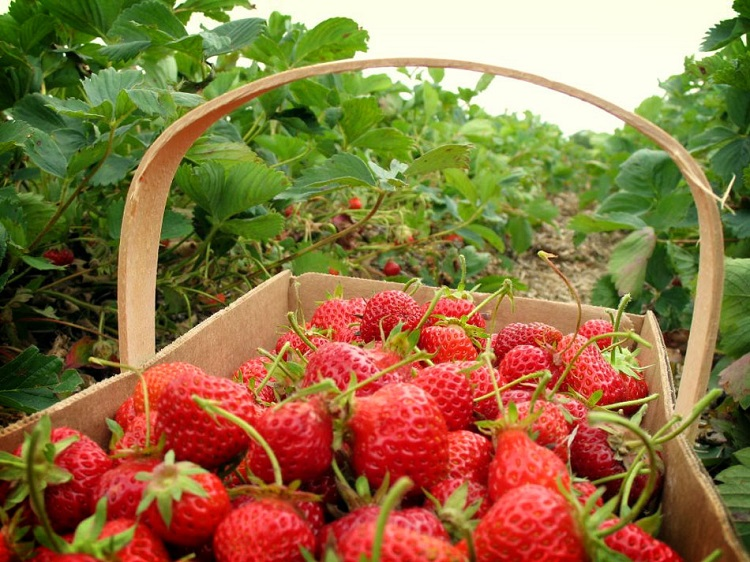

|  | Malino adalah kelurahan yang terletak di Kecamatan Tinggimoncong, Kabupaten Gowa, Sulawesi Selatan. Daerah yang terletak 64 km dari Kota Makassar ke arah timur laut ini merupakan salah satu objek wisata alam yang mempunyai daya tarik luar biasa, baik bagi masyarakat Sulawesi Selatan maupun pengunjung dari luar provinsi. Di kawasan wisata Malino sendiri, terdapat hutan wisata, berupa pohon pinus yang tinggi berjejer di antara bukit dan lembah. Jalan menanjak dan berkelok-kelok dengan melintasi deretan pegunungan dan lembah yang indah bak lukisan alam, akan mengantarkan Anda ke kota Malino. Kawasan tersebut terkenal sebagai kawasan rekreasi dan wisata sejak zaman penjajahan Belanda. |
Sebelum muncul nama Malino, dulu rakyat setempat mengenalnya dengan nama kampung ‘Lapparak’. Laparrak dalam bahasa Makassar berarti datar, yang berarti pula hanya di tempat itulah yang merupakan daerah datar, di antara gunung-gunung yang berdiri kokoh. Kota Malino mulai dikenal dan semakin popular sejak zaman penjajahan Belanda, lebih-lebih setelah Gubernur Jenderal Caron pada tahun 1927 memerintah di “Celebes on Onderhorighodon” telah menjadikan Malino pada tahun 1927 sebagai tempat peristirahatan bagi para pegawai pemerintah. Malino memiliki gunung-gunung yang sangat kaya dengan pemandangan batu gamping dan pinus. Berbagai jenis tanaman tropis yang indah,tumbuh dan berkembang di kota yang dingin ini. Selain itu, Malino pun menghasilkan buah-buahan dan sayuran khas yang tumbuh di lereng gunung Bawakaraeng dan gunung lompobattang. Sebagian masyarakat Sulawesi Selatan masih mengkulturkan gunung itu sebagai tempat suci dan keramat. Suhu di kota Malino ini mulai dari 10 °C sampai 26 °C. dan ketika musim hujan, berhati hati sedang berkendara karena, kota ini sering berkabut dan jarak pandangnya 100meter saja, selain itu sering terjadi tanah longsor. Perjalanan dari kota Makassar menuju daerah ini memakan waktu sekitar 1.5 jam. Wisata air terjun seribu tangga, air terjun Takapala, Kebun Teh malino high land, Lembah Biru, bungker peninggalan Jepang, dan Gunung Bawakaraeng menjadi ciri khas kota Malino. Oleh-oleh khas daerah ini adalah buah Markisa,dodol ketan, Tenteng Malino, terong belanda, wajik, dll. sayuran daun bawang, sawi putih, kol, kembang kol, sayur paling khas sayur pakis, dll. Malino juga menjadi daerah penghasil beras bagi wilayah Sulawesi Selatan. |
|